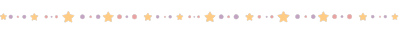

want an 88x31 button to link to this site?! use this!

no need to self host! use this img src: https://file.garden/X_3khxgapBy70O8i/Misc/2023phantabutton.gif
i definitely PREFER you self-host though! bandwidth and all that >_>
anyways, have time to look thru some links? these are cool websites and resources i like!! see table for quick access to all the sections on this page :0 PLEASE tell me if a link breaks so i can chuck it into internet archive n fix em
(if ur site is here and ya wanna be removed from here lmk!)

few of these ppl are my friends. all of them are ppl who i think are cool :D


i LOVE websites focused on media!!! theyre so cool i love lookin thru em
INVADER ZIM STUFF
not me lazily chucking these all into one category. LOOK these kinda things are super fascinating to me, i LOVE wiki and blog diving yk?

for every topic under the sun because i can't organize for shit X_X
CODE & WEB BUILDING


WRITING
ART
MUSIC
MISC
partially an "everything else" tab. whats wrong with me sharing my favorite lil web thingies, huh?!
CHOOSE YOUR OWN ADVENTURES
ik a lot of cyoas originate from 4c. i get them from reddit and imgur which is NOT MUCH BETTER LOL. keep in mind that as a result a lot of cyoas can be heteronormative and have harmful wording, i dont endorse ANY dicey stuff in them. for a lot of cyoas u will be a guy that can only kiss girls so either good for u or not SOB. rp opportunity or pretend the genders are different!!
TEXT ADVENTURES